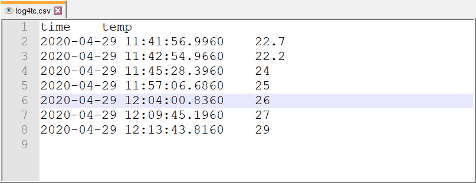

Protokollierung von strukturierten Werte
log4TC unterstützt das Prinzip von strukturierten Logging (Siehe auch Message Templates). Kern des Konzepts ist es alle Logging-Daten nicht als String zu übertragen, sondern alle Einzelteile in ihrer Ursprungsform zu übertragen und erste am Ende zusammenzusetzen. Der Vorteil ist, dass man während der Verarbeitung der Log-Meldung mehr Möglichkeiten hat. Ein Beispiel wird nachfolgend Beschrieben, bei dem es darum geht, Temperaturen über log4TC in ein CSV-File zu schreiben.
Aufruf der Meldung mit strukturierter API
Im Beispiel steht in der Variable fTemp eine Temperatur, z.B. eines Schaltschranks. Der nachfolgende Code prüft, ob sich die Temperatur geändert hat und schreibt diese dann in das Log-File:
IF fTemp <> fPrevTemp THEN
fPrevTemp := fTemp;
F_LogLA1C(
E_LogLevel.eInfo,
sLogger,
'Temperatur {temperature}',
fTemp,
F_LogContext().AddBool('csv', TRUE)
);
END_IF
Dieser Aufruf hat zwei Neuerungen: Zum einen wird für das Temperatur-Argument in der Log-Meldung nicht der Platzhalter '{0}' verwendet sondern die strukturierte Form. Der Ausdruck {temperature} bedeutet das dieses Argument einen Namen, nämlich temperature zugeordnet wird. Zum anderen wird noch eine Context-Eigenschaft mit dem Namen csv auf den Wert TRUE gesetzt. Der Name und der Wert der Context-Eigenschaft wurde hier willkürlich gewählt, wichtig ist diese nur in Verbindung mit der NLog-Konfiguration.
Tip: In der Praxis wird der einfache Vergleich
fTemp <> fPrevTempsinnvollerweise durch einen Vergleich mit Hysterese ersetzt, da sonst selbst kleines rauschen beim Analogwandeln zu neuen Log-Meldungen führen.
Der komplette MAIN-Baustein sieht damit wie folgt aus:
PROGRAM MAIN
VAR CONSTANT
sLogger : STRING := 'MAIN';
END_VAR
VAR
nCounter : UINT;
fbCountTime : TON := (PT:=T#1S);
fTemp : REAL := 22.3;
fPrevTemp : REAL;
END_VAR
----------------------------------------------------------------------
IF _TaskInfo[GETCURTASKINDEXEX()].FirstCycle THEN
// For Remote Log4TC Server change the AMS net ID and configure a route
PRG_TaskLog.Init('127.0.0.1.1.1');
F_LogL(E_LogLevel.eInfo, sLogger, 'SPS Task gestartet.');
END_IF
fbCountTime(IN:=NOT fbCountTime.Q);
IF fbCountTime.Q THEN
nCounter := nCounter + 1;
F_LogLA1C(
E_LogLevel.eDebug,
sLogger,
'Zähler geändert, neuer Wert {0}',
nCounter,
F_LogContext().AddInt('MachineNo', 42)
);
END_IF
IF fTemp <> fPrevTemp THEN
fPrevTemp := fTemp;
F_LogLA1C(
E_LogLevel.eInfo,
sLogger,
'Temperatur {temperature}',
fTemp,
F_LogContext().AddBool('csv', TRUE)
);
END_IF
PRG_TaskLog.Call();
Der Code befindet sich im Beispielprojekt unter den Namen "E_StructuredLogging".
Konfiguration von NLog
Das Ausgabe-Plugin NLog bietet eine Vielzahl an Funktionen an um Log-Meldungen auszugeben. In diesen Beispiel wird aber nur ein Ausschnitt betrachtet, der für das Verständnis notwendig ist.
Zunächst muss ein sog. target eingerichtet werden. Ein target ist die Konfiguration einer Ausgabe:
<target name="csvLogFile"
xsi:type="File"
fileName="${logdir}/log4tc.csv"
<!-- weitere Optionen -->
<layout xsi:type="CsvLayout"
withHeader="true"
delimiter="Tab">
<column name="time" layout="${longdate}" />
<column name="temp" layout="${event-properties:item=temperature}" />
</layout>
</target>
Im Beispiel wird eine Ausgabe in eine Datei (xsi:type="File") konfiguriert, die ein CSV-Layout (xsi:type="CsvLayout") benutzt. Danach werden zwei Spalten konfiguriert, eine für den Zeitstempel und eine für die Temperatur. Da die Temperatur als strukturiertes Element übergeben wird, kann direkt darauf mit ${event-properties:item=temperature} zugegriffen werden.
Als Nächstes dürfen an dieses target nur Log-Meldungen weitergeleitet werden, die auch relevant für das CSV sind. Eine Möglichkeit wäre zu prüfen, ob eine Meldung das temperature Argument besitzt oder nicht. Um einen anderen Weg zu zeigen, wird im Beispiel aber eine Context-Eigenschaft geprüft:
<logger name="*" minlevel="Info" writeTo="csvLogFile">
<filter defaultAction="Ignore">
<when condition="${event-properties:item=csv})" action="Log" />
</filter>
</logger>
- Zunäscht werden alle Log-Meldungen Selektiert, die min. den Level "Info" haben (
minlevel="Info"). - Für diese Meldungen wird geprüft, ob eine Context-Eigenschaft mit dem Namen
csvvorhanden ist und wenn ja wird der Rückgabe-Wert ausgewertet (condition="${event-properties:item=csv})"). Ist diesertruedann wird die Meldung an die CSV-Ausgabe weitergeleitet (action="Login Verbindung mitwriteTo="csvLogFile"). - Trifft die Bedingung nicht zu, dann wird sie für diesen
Targetignoriert (defaultAction="Ignore").
Tip: Das Ausgabe-Plugin NLog von log4TC ist eines der wichtigsten Ausgaben, da es seinerseits wiederum mit einer grossen Anzahl an Targets konfiguriert werden kann (NLog Targets). Es lohnt sich daher sich mit der Konfiguration von NLog vertraut zu machen.
CSV-Ausgabe
Lädt man das Programm und ändert man die Temperatur in der Variable fTemp einige Male von Hand, wird eine neue Log-Datei im CSV-Format angelegt mit folgenden Inhalt:

Wichtig ist, dass diese Meldung sowohl im CSV als auch im normalen Log ausgegeben werden, aber unterschiedlich formatiert.